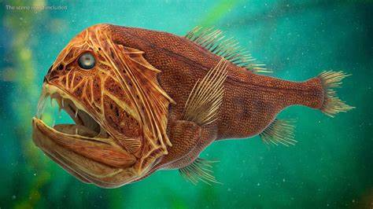

Small, ancient, and armed with the biggest teeth of any fish in the ocean.

Despite its terrifying appearance, the fangtooth fish is tiny, usually no longer than 18 centimetres. What makes it famous is having proportionally the largest teeth of any fish in the sea. Its fangs are so long that it has two small sockets on the roof of its mouth just so it can close its jaw without stabbing its own brain.
Fangtooths live extremely deep, often between 500 and 5,000 metres, in a zone with almost no light and very little food. Their oversized teeth and jaws let them grab and hold onto any prey they come across, since a second chance might not come for a long time.
Their black skin helps them stay hidden in the darkness, and their slow metabolism means they can survive for long stretches between meals, a common survival strategy for creatures living in the food-scarce deep ocean.
← Back to Creatures of the Deep